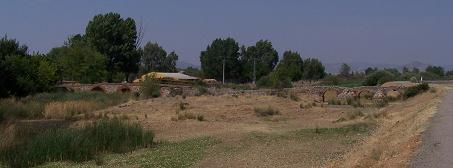
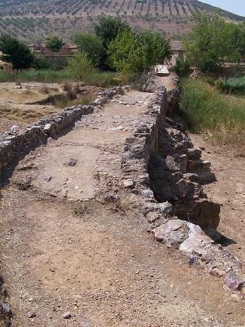
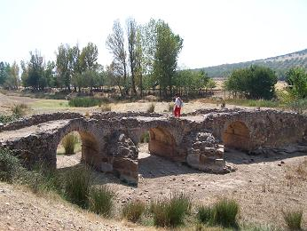

|
PUENTE ROMANO MALAGÓN |
La historia de Malagón se remonta al Paleolítico en sus inmediaciones se han hallado pinturas rupestres. Neolítico, tartesos, cartagineses, romanos y visigodos han poblado estas tierras.
|
 |
El puente de origen romano,
reconstruido a lo largo de los años, se halla junto al
molino Carrillo a unos 2km del pueblo.
El puente se alza sobre el río Bañuelos, consta de 10 ojos. Poses estribos de grandes sillares y tajamares en ángulo. Por el discurre la calzada que se cree que unía Córdoba con Toledo. El puente se encuentra en mal estado de conservación y amenaza con derrumbarse. |
En sus limites se ha hallado una necrópolis visigoda, en la Aldea del Espíritu Santo.
|
 |
 Ver PUENTES ROMANOS |
| CIUDADES HISPANIA | HISPANIA | TOPÓNIMOS |